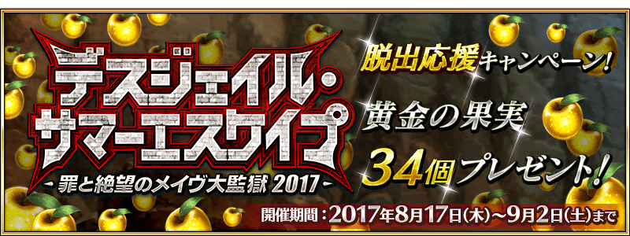

※在2017年8月17日(四)AM2:00，變更以下舉辦期間與登入獎勵內容。
※舉辦期間延長至9月2日(六) AM2:59。(8/25追記)
2017年8月16日(三) 17:008月17日(四) 10:00～8月31日(四) AM2:599月2日(六) AM2:59的期間，舉辦「Death Jail・夏日逃脫 ～罪與絶望的梅芙大監獄大監獄2017～」逃脫聲援宣傳活動！。
舉辦期間限定活動「Death Jail・夏日逃脫 ～罪與絶望的梅芙大監獄大監獄2017～」後，對全部的Master對象做為登入獎勵贈送最多合計3034個黄金の果実！(8/25修正)
舉辦期間限定活動「Death Jail・夏日逃脫 ～罪與絶望的梅芙大監獄大監獄2017～」後，2017年8月16日(三) 17:008月17日(四) 10:00～8月31日(四) AM2:599月2日(六) AM2:59的期間中，在初次進行登入的時間點贈送黄金の果実24個！
(8/25修正)
|
◆舉辦期間◆ |

|
※期間內未登入的情況無法領取。
※黄金の果実會贈送至禮物箱。
※禮物只能領取1次。
下述的期間中，進行登入的話做為每日登入獎勵贈送黄金の果実2個！
全部領取的話最多可得到2826個黄金の果実！
【8/25 追記】
隨著期間延長，新追加8月31日(四) AM3:00～9月2日(六) AM2:59的2天份黄金の果実2個(合計4個)！
全部領取的話最多可得到30個黄金の果実！
◆舉辦期間◆
2017年8月18日(四) AM3:00～8月31日(四) AM2:599月2日(六) AM3:59
※舉辦期間延長。
(8/25修正)
※第1次的登入獎勵從8月18日(四) AM3:00配發。
※登入獎勵會在AM3:00配發。
※最多能領取282630個，根據遊戲開始的時機點，可能會無法至此上限。(8/25修正)
※與「初次登入獎勵就贈送黄金の果実4個！」宣傳活動有所差異。(8/25修正)